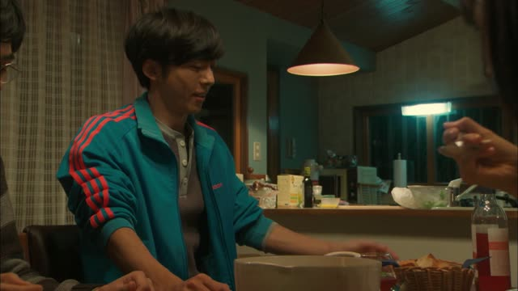
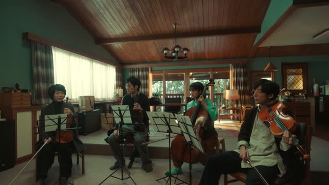
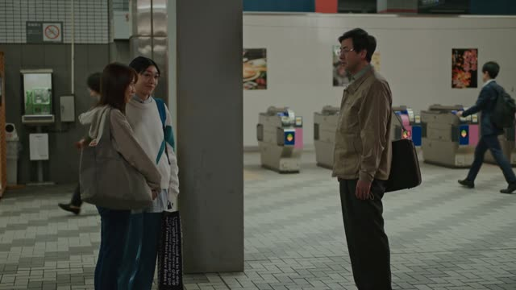
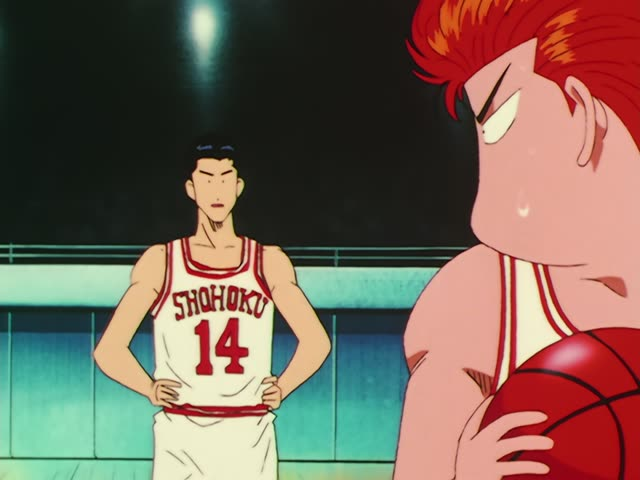

～ながら

Quartet · Episode 2
餃子の話しながら食べるの、やめません？
"Can we stop talking about gyoza while we eat?" [he made bouillabaisse]
～ながら means "while": one person does two things at the same time. Take the ます-stem and add ながら: 話します → 話しながら. The main action goes at the end.
On this card, Iemori made bouillabaisse, and everyone keeps talking about gyoza while eating it. The main action is 食べる; 話しながら is what goes on alongside. やめません？ makes it polite.
Both actions are done by the same person. For two people, use 間 (while) instead.
Shirokuma Cafe · Episode 48
歩きながら食べるコロッケは最高だね。
"Croquettes you eat while walking are the best."
On this card, Panda and Shirokuma buy croquettes at a stall. 歩きます → 歩きながら, then the main action 食べる.
Quick Examples
Your friend asks how you study.
音楽を聞きながら勉強する。
"I study while listening to music."
CasualA teacher warns a student.
歩きながらスマホを見ないでください。
"Please don't look at your phone while walking."
PoliteTalking about your job.
働きながら日本語を勉強しています。
"I study Japanese while working."
ながら can also cover a long stretch of time.
PoliteYour friend is on the phone at dinner.
食べながらしゃべらないで。
"Don't talk while you eat."
CasualWith and without
コーヒーを飲んで、新聞を読む。
"I drink coffee and read the paper." One, then the other.
コーヒーを飲みながら新聞を読む。
"I read the paper while drinking coffee." Both at once.
Examples from Media

Quartet · Episode 1
いつも探りながらごはん作ってたんですね。
"So you always cooked while trying to figure out what he liked."

Brush Up Life · Episode 7
やってます。バイトしながらですけど。
"I am. While working a part-time job, though."
ながら + です at the end: "while doing X".
Kekkon Dekinai Otoko · Episode 11
目標定めながら歩いてます。
"I walk while picking a spot to run to."
Walking home at night, she picks a house to run into if anything happens.
Dungeon Meshi · Episode 16
魔物を食べながらここまで来たんだ。
"We got here while eating monsters."
Here ながら covers the whole trip.

Slam Dunk · Episode 30
奥をずっと見ながら打つんだ。
"Shoot while keeping your eyes on the back of the rim."
Samurai Champloo · Episode 4
言い訳しながら生きてんじゃねえよ。
"Don't live your life making excuses."
Literally "don't live while making excuses".
Odd Taxi · Episode 1
落語聞きながら寝るんだけど。
"I fall asleep while listening to rakugo."
Vinland Saga · Episode 20
全員、歩きながら聞け。
"Everyone, listen while you walk."
聞け is the rough command form of 聞く.